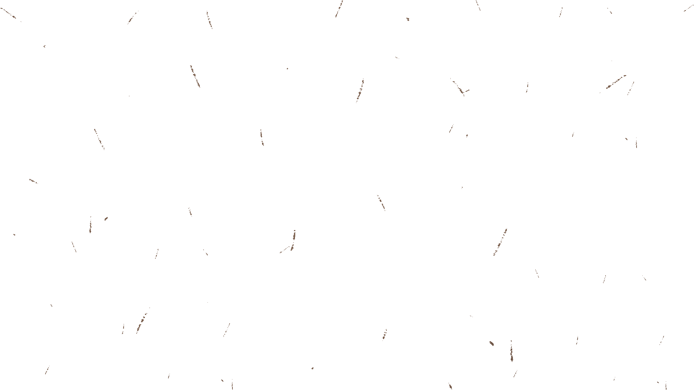

С самого детства я любила рисовать. Так получилось, что моя судьба была связана именно с акварелью, ибо
в гуашь много воды не добавишь. Особенно я люблю рисовать людей. Они такие разные, со своими
индивидуальными чертами, и это так прекрасно!
Относительно недавно я начала учиться играть на гитаре. Потихоньку перебирать струны, чувствовать каждый
звук, каждую ноту — в этом и заключается прелесть музыки, она трогает до глубины души.
Может, странно называть это хобби, но я люблю копаться во всяких программках. Изучать их, порой
чувствовать себя самым настоящим чайником, но в итоге разобраться и дальше вытворять креативные вещи —
это занимательно. Сейчас я изучаю Photoshop и Illustrator, но хочу расширить этот список.
главная
обо мне
хобби
контакты
работы